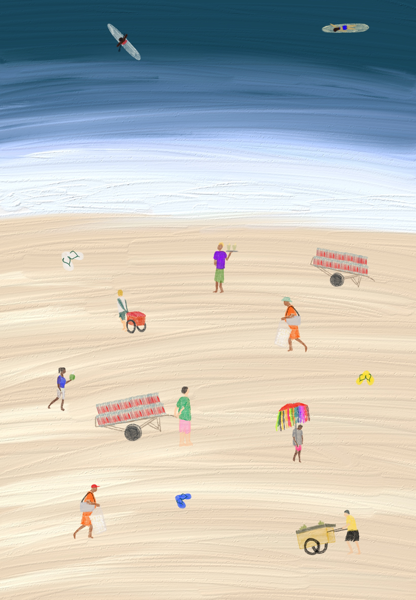

cartaz autoral
Comércio
O comércio nas praias do Rio de Janeiro pode ser analisado como uma parte indispensável na construção e manutenção da identidade praiana carioca, unindo memória e transformação. Com sua intensa atividade de ambulantes e barracas, o comércio representa um espaço de interação e troca que transcende o aspecto econômico, destacando-se como uma forma de conexão humana. Essa dinâmica remete à Eutrópia, de Italo Calvino, onde a renovação constante dos papéis e interações revitaliza a vida dos habitantes. Da mesma forma, o comércio ambulante transforma a praia em um ambiente de encontros e reinvenções, em que cada interação cria uma nova possibilidade de diálogo, troca cultural e experiência.
É um elemento que marca profundamente a experiência do espaço. A figura do vendedor de mate gelado e biscoitos Globo, do artesão oferecendo acessórios, ou do ambulante com esfiha ou cangas, compõe uma paisagem que se torna familiar e reconhecível para qualquer frequentador.
Portanto, é impossível pensar nas praias cariocas sem evocar essas figuras e seus produtos. O comércio nas praias cariocas é mais do que uma atividade econômica, é um espaço de interação social e construção de memórias e identidade local.